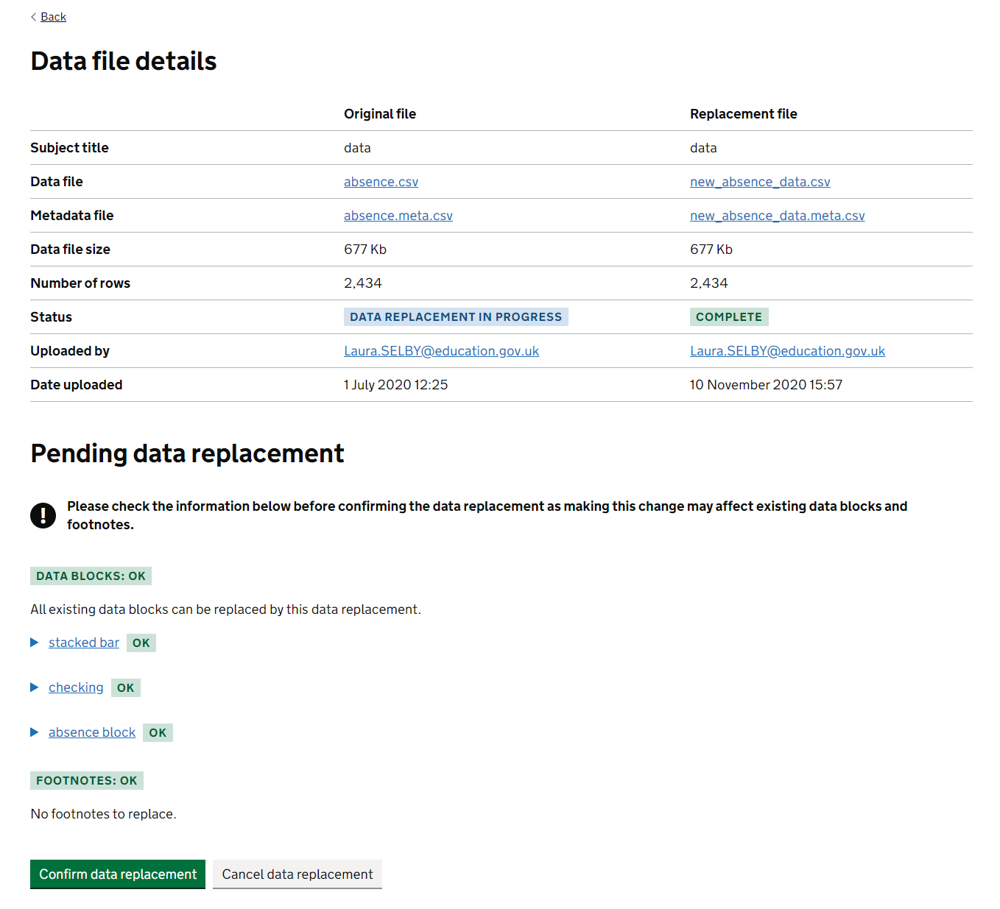
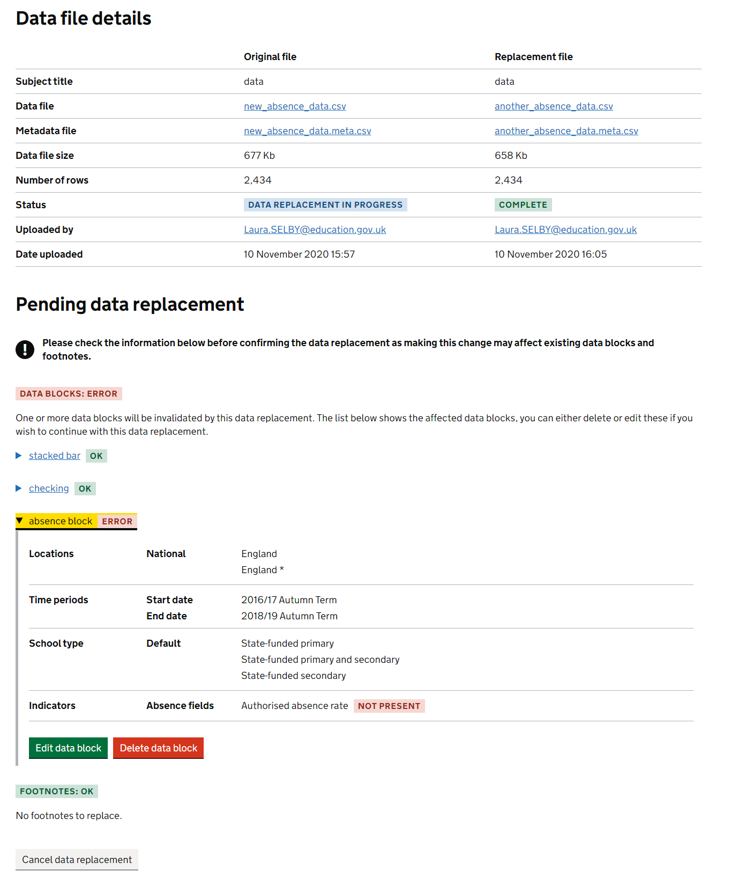
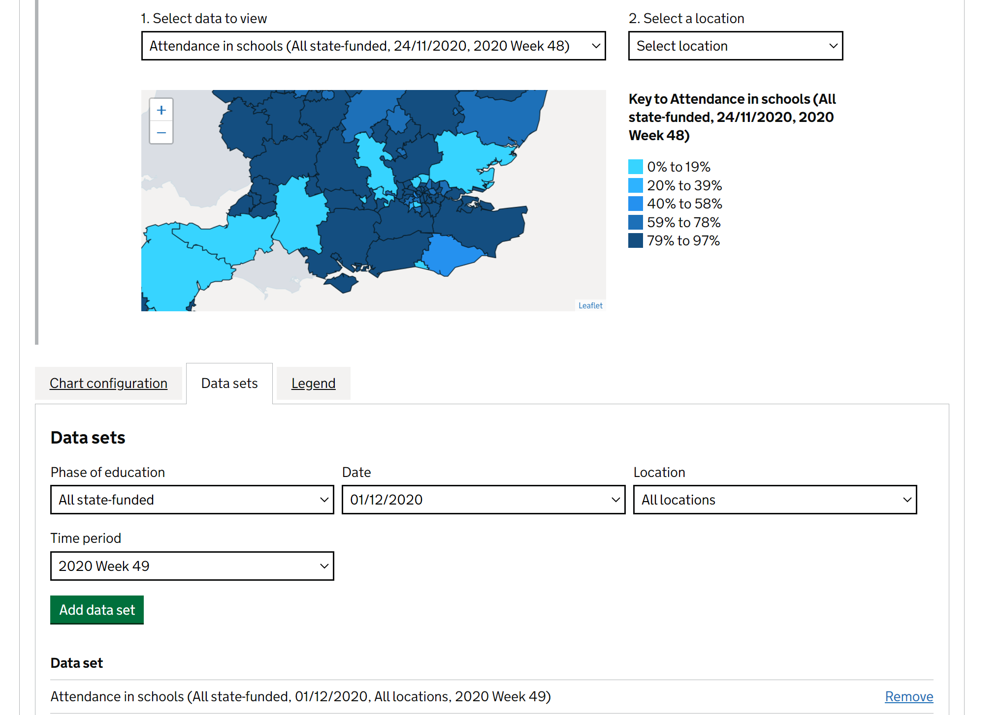
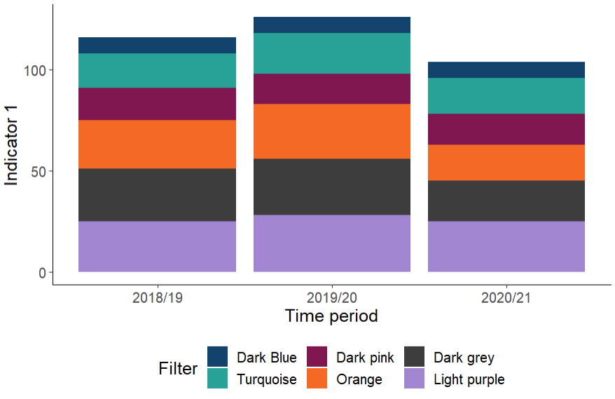
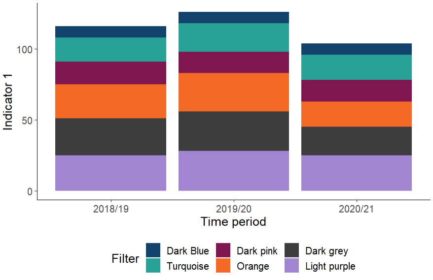
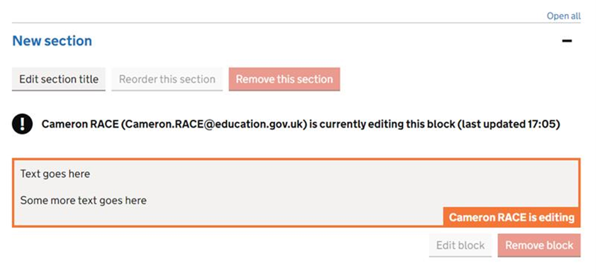
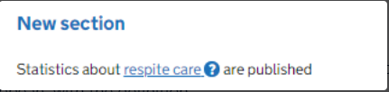
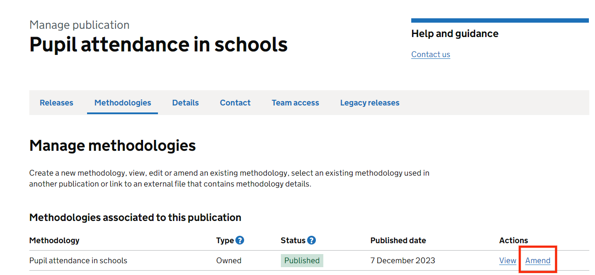
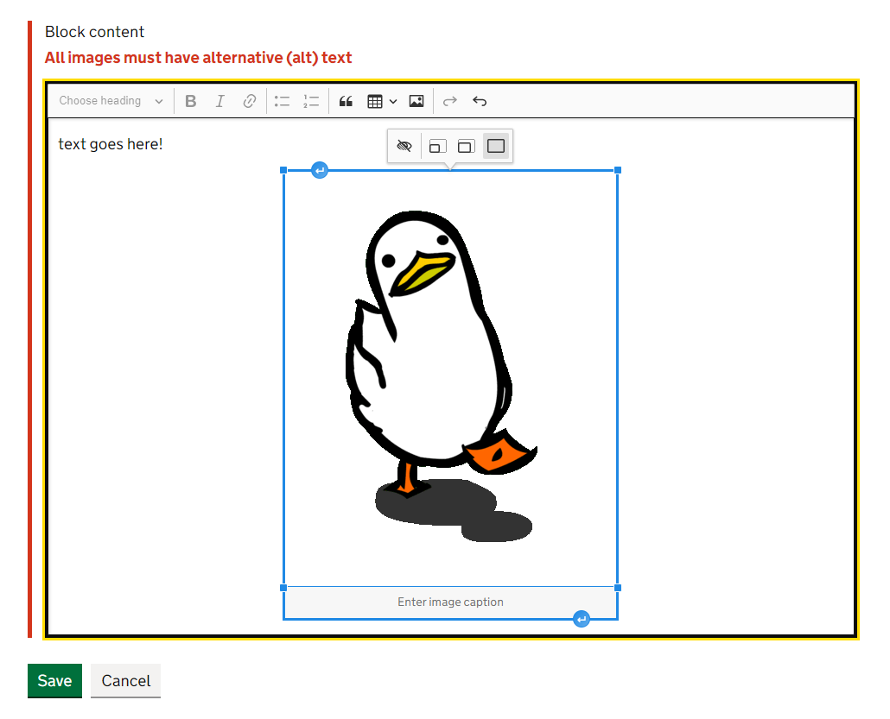
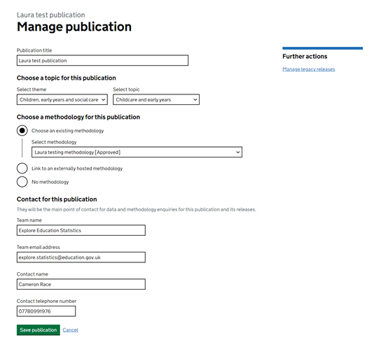

# Load the necessary libraries
library(ggplot2)
library(dplyr)
# This is the GSS standard categorical colour palette
gss_categorical_palette <- data.frame(
names = c('Dark Blue', 'Turquoise', 'Dark pink', 'Orange', 'Dark grey', 'Light purple'),
hex = c("#12436D", '#28A197', "#801650", "#F46A25", "#3D3D3D", "#A285D1"),
id = c(1,2,3,4,5,6))
# Set up a dummy data-set.
# Note the line factor(...,levels=...) allows you to order your filter values in
# the final plot based on the ordering entered into the levels keyword. If left,
# it'll default to alphabetical.
data <- data.frame(
time_period=c("2018/19","2018/19","2018/19","2018/19","2018/19","2018/19",
"2019/20","2019/20","2019/20","2019/20","2019/20","2019/20",
"2020/21","2020/21","2020/21","2020/21","2020/21","2020/21"),
Filter=c(gss_categorical_palette$names,
gss_categorical_palette$names,
gss_categorical_palette$names),
indicator1=sample(4:16,18,replace=TRUE) +
c(gss_categorical_palette$id,gss_categorical_palette$id,gss_categorical_palette$id)*3
) %>%
mutate(
time_period=as.factor(time_period),
Filter=factor(Filter,levels=gss_categorical_palette$names)
)
# Create a line chart
ggplot(data, aes(x=time_period, y=indicator1, group=Filter, colour=Filter )) +
geom_line(size=1.2) +
scale_color_manual(values=gss_categorical_palette$hex) +
theme_classic() +
theme(
legend.position = "bottom",
text = element_text(size = 14, family = "Arial"),
strip.text.x = element_text(size = 20)
) +
ylab("Indicator 1") +
xlab("Time period")
# Create a stacked bar chart
ggplot(data, aes(x=time_period, y=indicator1, fill=Filter )) +
geom_bar(stat = "identity") +
scale_fill_manual(values=gss_categorical_palette$hex) +
theme_classic() +
theme(
legend.position = "bottom",
text = element_text(size = 14, family = "Arial"),
strip.text.x = element_text(size = 20)
) +
ylab("Indicator 1") +
xlab("Time period")Explore education statistics (EES)
Guidance for how to use the features in the explore education statistics (EES) platform
Explore education statistics (EES) is the Department’s official statistics dissemination platform, designed to make DFE’s published statistics and data easier to find, access, use and understand.
The EES platform consists of two applications:
The public website, where users access stats
The admin website, where production teams create their stats
Maintenance and use of the platform is supported by the explore education statistics platforms team.
Accessing EES
Environments
Warning
If you are bookmarking links, please be careful to bookmark the links below exactly as they are shown. Often when signing in you will be redirected via other URL’s as a part of the authentication process, and bookmarking those may lead to errors.
EES consists of two parts. We also have four versions (environments) of EES, the banner for the admin part of each environment will inform you which environment you are on, this is also colour coded.
There is no overlap between the environments and content created on one cannot be moved to any other. The core functionality across the environments is identical except for new changes, which are deployed through the different environments before they make it to production.
Development - Green
Where changes are first merged in, and often the first time different pieces of work from different developers will interact properly
Test - Pink
Where our developers can carry out manual testing of any new features to make sure things work as expected
Pre-production - Yellow
A sandbox area for analysts to carry out functionality testing.
Teams can use the pre-production environment to familiarise themselves with the platform and test out what is possible. All analysts have full permissions to create publications and releases, and can see everything else that other analysts are making. This is unique to the pre-production environment.
There are two separate pre-production sites to mirror the public sites so that teams can familiarise themselves with both sides of EES:
Admin pre-production: where teams can test out creating publications and releases.
Public pre-production: where teams can test out how their releases might look on the public site.
When accessing the pre-production environment you may be asked for a username and password, these are as follows: dfe, dataresearch.
Warning - unpublished data
The pre-production environment is not suitable for unpublished data. Unpublished data should only be uploaded to the production environment.
Production - Red
The real service, anyone creating real releases that they intend to publish to the public should be using this environment.
Analysts will only have access to releases that they have been granted specific access to.
As mentioned, there are two public sites:
Admin production: where teams will create their releases
Public production: where any member of the public can access the published releases
Getting access to admin
Access to both the production and pre-production admin services is limited to DfE AD accounts only and users have to have been invited to the service by either the explore education statistics platforms team (for full access) or an existing user (for pre-release access). Invites to the service are sent out via email using GOV.UK Notify.
To be invited to the service for full access teams need to email the explore education statistics platforms team, stating who needs access, what permissions they require (analyst or approver), and for which publications these apply. This email should be sent by the Team Leader, or accompanied with the relevant Team Leader’s approval. Once access has been granted you will receive an email inviting you to use the platform.
Note
Jobshare emails can not be used to access EES. Specific personal emails should be used instead, in the same way as you sign in to windows on your machine.
Roles and permissions
The Statistics Development Team are responsible for setting up and maintaining user permissions during the beta phase. Change requests will be monitored by the explore education statistics platforms team.
The following roles exist within EES admin and are assigned to a specific release:
Pre-release
Any user invited for pre-release is given a pre-release user role. During the hours of pre-release they can:
- Preview the release page, including downloading files
- Preview the table tool page for that release
Analyst - contributor
Any analyst working on a release within EES admin will have the contributor role. They can:
- Edit release details
- Upload data and other files
- Create footnotes, datablocks and charts
- Edit and comment on release content
- Invite PRA users
- Move the release status between draft and ready for higher review
Analyst - approver
The responsible statistician for a statistics release will have the approver role, allowing them to sign off releases for publication. This will usually be the responsible G5 or G6 for the statistics publication. They can do everything a contributor can, as well as:
- Move the release status between draft, ready for review and approved
- Schedule the release for publication (either immediately or for a specific date)
There is also a publication owner role, which is assigned at publication level to a users account:
Publication owner
This permissions level gives publication owners control over their publications. They can do anything a contributor can for all releases within the publication. On top of this the publication owner also has access to:
- Manage publication level details
- Create new releases within a publication
- Create an amendment of the latest published release within a publication
- Cancel an amendment before it is published
BAU
The administrative role:
- This role is assigned to a user and gives full access including administrative tools, typically only used by the Statistics Development Team and EES developers.
See below for a diagram of the responsibilities of each role as part of the publication process in EES:

Managing permissions
If you are a publication owner then you can add other analysts in your team to specific releases to allow them to edit and contribute to the release.
To do this, select your publication from the admin dashboard.

Then go to the ‘Team access’ tab.
In here you can see everyone who currently has access, and invite your team to contribute to the release, as well as manage and remove access. To give access the release must already exist, and you’ll need to give individual access for each new release you do in the publication.
If you are inviting someone who hasn’t used EES before, make sure to add their DfE email. Jobshare email addresses and mailboxes will not work, each user must be given access with their individual DfE account. The external user access section has more details on how to give access to external contributors.
To change Publication Owners, or Approvers, contact the explore education statistics mailbox.
Requesting a new publication
If you have not published on EES before, or if you’re creating a brand new publication, you will need to contact us to create the publication for you before you can get started.
If you want to request a new publication, please be prepared to provide us with the following information:
- Theme that you want the publication to sit under in our site (use existing ones, or suggest new ones)
- Title of the publication (exactly as you want it to appear on the site)
- Publication summary (see our guidance on publication summaries for more information on what to include)
- If the methodology already exists elsewhere and you have a URL for it, or if you want to create one
- Team name and email address
- Lead statistician name and contact number (contact number is optional)
- Time periods of the releases you’re creating
- Badging (whether they are National statistics, an ad-hoc publication, or official statistics)
- Who needs access to the publication (list of email addresses of analysts who need access to the release and at what permission levels)
Publication details can be managed by publication owners or via requests to the explore education statistics platforms team.
The hierarchy of content within EES is as follows:

Methodology documentation is attached at a publication level within EES - meaning one standalone piece should be written to cover all releases for the given publication within the service.
Themes
Publications are organised into themes (as shown on the EES Find Statistics page), and then within each publication there are releases - where the latest release includes the latest statistics for that publication.
For example:
| Level | Example |
|---|---|
| Theme | Pupils and Schools |
| Publication title | Pupil absence in schools in England |
Publication summaries
Publication summaries are a key tool in helping users find the statistics that they’re looking for. We use them on gov.uk pages and in the EES find statistics page.
You only have 160 characters – to make sure you are fully utilising these, have a look through the following advice:
Use plain language to use terms and phrases that users are likely to use e.g. gender pay gap versus Annual Survey of Hours and Earnings.
Is it clear what the geographical coverage of this publication is e.g. England?
Is it clear how frequently the releases are published?
Is it clear what breakdowns you cover? E.g. Ethnicity, Sex, SEN?
Include the abbreviations but make sure to also write them out in full so that people can search for either, e.g. Free School Meals (FSM)
Avoid phrases like “This release covers” as this wastes characters and delays users getting to the main information.
Have you looked at the EES analytics to see what users key search terms on your publication are? Are key words front loaded In your summary?
Don’t waste space on including definitions of a topic within the summary.
Admin dashboard
Important
Use Google Chrome or Microsoft Edge to access and use the admin part of the explore education statistics service.
When you enter the admin website you’ll see the admin dashboard. What you can see here will be dependent on your access permissions i.e. you’ll only see the publications that you have been granted access to.
The Statistics Development Team will be responsible for setting up and maintaining user permissions during the beta phase. Change requests will be monitored via the explore education statistics mailbox.
Within the admin dashboard you can view and manage existing publications, including creating and editing their releases. You can use the drop down lists to find releases by theme/topic/publication or use the draft and scheduled releases tabs to see releases that are in progress.
External user access
It is possible to request that external users from other government organisations have access, and they can then be added as collaborating analysts on a release or as pre-release viewers. Each external user must complete a declaration form. When you email the explore education statistics platforms team to request external user access, you should attach copies of the declaration forms for each external user. Temporary external accounts are usually set up to expire after three months, with an option to extend this if required.
Adding external users as pre-release viewers
This process has two distinct steps: getting a temporary account set up per user in the DfE Azure Active Directory, and then adding lists of users requiring pre-release access (PRA) onto EES itself. The diagram below shows the responsibilities of the publication team, the Statistics Development Team, and the Identity Access Management Team in this process:
Adding external users as collaborating analysts
The process for adding external users as collaborating analysts is similar to adding external users for PRA, except for the final step, in which the Statistics Development Team add the external users via the EES admin interface. The process can be seen in the diagram below:
What to include in an external access request
If you have external users you’d like to request access for, please send the following details to the explore education statistics platforms team
- Email addresses of users to be added
- Reason for access
- Length of time access is needed (the standard time period is three months)
- Copies of declaration forms for each user
Important
You need to contact us at least two weeks in advance of requiring access, but ideally as early as possible. Due to the dependency on DfE’s digital security, we cannot guarantee access or how long it may take.
Creating releases
New releases can be created by publication owners. To create a new release in a publication series, navigate to the relevant publication and click ‘Create new release’, you will then need to enter the following information:
- Time identifier for the release
- Time period for the release
- Type of release (National, Official, Ad-hoc etc)
Once you have created your release you will see the dashboard to edit your release, here you need to work through the following tabs to create your release:
Data and files (uploading data files, supporting files and creating data guidance)
Footnotes (creating footnotes and assigning to relevant data)
Data blocks (creating summary tables, charts and key stats indicators)
Content (drafting release content)
Sign off (moving through the approval process)
Pre-release access (invite users to pre-release and create public pre-release list)

If you are experiencing issues or need help with creating a new release, you can get in touch with the explore education statistics platforms team.
Data and files
You need to make sure that the data files and accompanying metadata have passed through our data screener checks before trying to upload it.
All data files uploaded will be available to download for users to explore (this will be in the same format as they are uploaded).
Warning
Releases cannot be published without a completed metadata document. If not filled in an error will be flagged during sign off.
Subject titles
You’ll need to give a ‘Subject title’ to each data file you upload. This is what users will see whenever the file is referenced within EES so it should be a simple user-friendly title. The actual file name and data guidance can include more technical / coverage information.
When adding a Subject title, think about the general user and how they will appear in the service:
You don’t need to include the publication name in the title as this is always already implied within EES
You don’t need to list what filters are in each file in the title, users can see this in the data guidance
You don’t need to include the date ranges covered in each file in the title, users can see this in the data guidance
Your Subject titles should be short and snappy and clearly explain what is in each file. Some good examples of this in practice are included below:
- Early years provision by provider type
- Teacher vacancies
- ITT new entrants by subject and training route
- Average pay of further education workforce
- Qualified entrants to teaching
You can make changes to the Subject title for your data file after it has been uploaded using the ‘Edit title’ option.
Uploading files
When uploading files you have a choice between uploading as separate CSV files or as a combined ZIP file.
Tip
For data files greater than 80mb we recommend uploading as a ZIP file.
Once you click to upload the file a ‘Status’ will be visible that shows the progress of the import process. This may take a little while depending on the size of your file and if there are numerous files queued for import. You cannot view the dataset or use it to create tables/charts until this status is ‘COMPLETE’.
If you are having any issues uploading a file, please contact the explore education statistics platforms team.
Bulk uploads
You can upload your data files in bulk by using a single compressed ZIP folder.
You must ensure that the ZIP folder contains:
- All of your data files
- All of your metadata files with a matching name to a data file (e.g.
dataset_name.csv/dataset_name.meta.csv) - A
dataset_names.csvfile with two columns (file_name,dataset_name)
The two columns in dataset_names.csv should contain:
file_namemust be the name of a matching CSV data set, without the file extension, e.g.dataset_namedataset_nameis where you can provide the human readable version to use in the service, e.g.My awesome dataset
For example, your file may look like the following table:
| file_name | dataset_name |
|---|---|
| teacher_pay | Teacher pay |
| teacher_retention | Teacher retention |
| workforce_characteristics | Workforce characteristics |
Once uploaded and processed, each data file will then proceed to import as normal, and you will be able to edit them as if you had imported them separately.
If anything in this ZIP folder doesn’t match up with this, you will receive an error message explaining why and what has happened.
Ordering filters and indicators
You can save custom orders for your filters and indicators. This can help to save time when creating tables and charts, and to aid users who view your data themselves via the table tool.
To reorder your filters and indicators:
- Go to the data and files page after uploading underlying data files
- Go to the ‘Reorder filters and indicators’ tab (within the data and files page)
- Choose which file you want to reorder and then click and drag the items until they’re in the order you want them to show in the table tool.
This then becomes the default order for this filter or indicator and will apply in all charts and tables automatically (including the order that the options will be shown to users in the table tool on the public website).

Replacing data
If you just need to change the Subject titles for your data file(s) you do not need to go through the whole replacement process, just click the ‘Edit title’ option.
However, if you notice a mistake in your data file you can replace it with another. When replacing a data file the platform will attempt to recreate any data blocks and footnotes that were built using the previous file.
Warning
The replacement file must contain the exact same column names and types as the original. For example, a character column named “date” must also be replaced with a character column named “date”. A numeric column named “date” will not work in the replacement.
Navigate to the file you wish to replace, and you should see a ‘Replace data’ option in the ‘Actions’ row.

The first step is to upload the new file.

Once you’ve chosen and uploaded your replacement file it will need to go through the usual import process before it can check if retaining existing data blocks and footnotes will be possible.

Once the upload is finished a report will appear which highlights whether existing data blocks and footnotes can be replaced successfully. If you want to keep any data blocks and footnotes you’ve built you will need to make sure that your replacement data file still contains the information (indicators, filters, geographic_levels and time_periods) that was used to create them.

If it’s not possible for a data block or footnote to be recreated using the replacing data file a warning will appear and you’ll be prompted to either edit or delete them before completing the replacement.

Warning
Remember to double check any data blocks or footnotes that were recreated by the platform before publishing your release.
Supporting file uploads
Supporting files should not be used as the default. Wherever possible you should upload your data as data files that can then be used in the table tool.
Any files you want to make available for users to download but aren’t intended for the table tool should be added as a supporting file upload. These files will need to meet all requirements of the new accessibility regulations before they can be published.
Examples of supporting files may be:
- Infographic pages
- Supplementary data that isn’t intended for the table tool
To ensure that spreadsheets are accessible, see the guidance from gov.wales, and this Analysis Function guidance.
If you are unsure of whether you should be using supporting files, contact the explore education statistics platforms team for advice.
Public data guidance
Within the ‘Data and files’ page, you can also create your public data guidance. This replaces the information that would have previously been uploaded as a PDF on GOV.UK and is designed to help users understand and use the data they download from your release. See the Permanent and fixed period exclusions data guidance for an example.
The ‘Data files’ section of the document will automatically update as you add new data files to your release, however you will need to add an overview of all the data included in the release and short summaries for each data file before the release can be published.

A list of variables in each file with an associated label (taken from metadata uploads) and associated footnotes will also be displayed for each file.

Warning
Releases cannot be published without a completed data guidance page. If not filled in an error will be flagged during sign off.
Footnotes
We generally advise against using footnotes, unless they’re absolutely necessary (think about how many people will actually be reading them!). However, if you do want to add footnotes to your data, this should be done using the EES footnote function and not added in-text.
Footnotes can be added via the footnotes tab. Rather than writing multiple tables and assigning individual footnotes, you write footnotes and assign them to certain indicators and filters so they appear when users select them in the table builder.
For example in the below, the footnote “This is a footnote” is assigned to the “Headcount” indicator for all options within the “School type” filter.

If you would rather, you can assign a footnote to the whole data file by ticking this box.

You can assign the same footnote across multiple data files.
Tip
We recommend that you only add footnotes once you are certain the data file is final. If you have to delete the data file, all the assigned footnotes will be deleted alongside it.
Data blocks (tables and charts)
A data block is a smaller cut of data from your original file that you can embed into your publication as a presentation table, build charts from, and link users directly to.
The ‘Data blocks’ tab will list all the data blocks you have created, highlighting which have charts, are used in content and are saved as highlight tables. Here you can also choose to create a new data block.

Using data blocks effectively
Aim for fewer tables, and keep them small. As a guide, we suggest no more than a couple of tables per accordion section.
Presentation tables are the tables you include within the accordion sections of your release to quickly visualise numbers. Unlike the underlying data files, the presentation tables focus on specific parts of the story you are telling. They are distinct from, and should never be a copy of an underlying data file.
Do include them where they add value to your release.
Don’t include them as a straight copy of the ready-made Excel tables previously published on gov.uk
Note
You do not need to recreate all of the old excel tables, users can find the numbers they are interested in using the table tool, or analyse the underlying data if they want the data behind the release.
Tables
By default, every data block will include a table.
You will be taken through 4 steps to create the data block:
- Data set: select the data set you want to use
- National / Regional: choose the geographic level you want to display
- Time period: select which time periods you want to include
- Indicators / Filters: select the indicators and filters to be included
Once you have configured the data source for the data block, you can then preview the table displaying the chosen variables.
You can reorder table headers with the ‘Move and reorder table headers’ button to restructure your table however you want it before you save.
Once you are happy with your table, you can then fill in the Data block details:
- Name of the datablock - this won’t be visible to users, it is for your own reference so you can differentiate between your data blocks
- Table title - this is the title of the datablock that will be visible to users
- Source - this should be the source of the data used to create the data file (not the data file itself) e.g., ‘School Census’.
Featured tables
You can also choose to highlight a data block table as a ‘featured table’ which means it will show in a list of featured tables within the table tool. This is designed to help users get to tables of interest more quickly (without having to create tables themselves).
There is an option to choose if a table is a ‘featured table’ when saving each data block, here you can name the table and add a description giving the table coverage (please don’t just repeat the table name in the description):

Each featured table will then be listed to the user within the table tool. Featured tables do not have to be embedded within your release content to be included in this list.
Fast track links
Any data block tables that are created and saved will be assigned a ‘fast-track link’, this URL can then be used throughout your release as a way to direct users to specific tables within the table tool more quickly so they can interact with and explore the data further. It will appear at the top of the page like this:

When your release is published, any embedded data block tables within the release will have an ‘explore data button’ beneath them which will utilise these fast track links to quickly direct users to the table within the table tool so they can explore the data further. You can also use fast-track links as a hyperlink within release commentary (without having to embed the data block).
In your fast-track titles, you don’t want to overload information, but still want to direct the user to the right place. Remember they can go back to the table tool through your featured tables to change filters and indicators as needed.
Fast-track titles should explain:
- What the table is showing in the simplest terms
- Who/Where the data covers (e.g. characteristic groups and geography levels)
- When the data in the table is reported for
Here are a few examples of good fast-track titles in EES:
- Number of Schools and Pupils, by School Type, 2015/16 to 2020/21
- Absence Rates by School Type, 2016/17 to 2020/21
- Free School Meals, by Region, 2015/16 to 2020/21
What is the difference between a fast-track link and a permalink?
EES also offers ‘permalinks’ for any table created in the table tool which allows a user to save a link to a permanent, static, version of a table they have created. Analysts can make use of these permalinks when answering queries or in PQ and FOI responses.
Fast-track links are similar to permalinks however instead of linking to a static version of a table they link to an ‘active’ version of the table within the table tool - meaning users can interact and change what’s shown in the table from within the table tool if they choose to.
Charts
After building and saving a data block table you will see a ‘Chart’ tab appears. This tab will take you to the EES chart builder, where you can choose to add a chart to your data block.
The first step to creating a chart is choosing the chart type, currently the EES chart builder can build line charts, horizontal/vertical bar charts (including stacked and clustered) and maps.
After choosing your chart type you then need to work through the following stages to build your chart. In each stage you’ll be shown a live preview as you make changes.
Chart configuration
Within the ‘chart configuration’ tab you can add a title, alt text, move the legend and change chart dimensions.
Note
Make sure to review your chart dimensions before you publish. Users should be able to read the labels on the axes and see the legend without having to scroll.
Note, within the vertical and horizontal bar chart types you can also create stacked bar charts by clicking the ‘Stacked bars’ option within the chart configuration tab.
Data sets
Here is where you add data to the chart. You can add each series one at a time or all together.
Legend
You can edit the chart legend, and styling of your series via the Legend tab.

Tip
To select specify custom colours outside of the defaults, you can double click on the colour codes at the bottom of the colour picked until you get to the type of code you’re wanting to input (e.g. hex code) and then enter the code manually.
X axis (major axis)
Here is where you configure the x-axis: You can alter gridlines, labels, sort, limit and add reference lines.

| Option | What it does |
|---|---|
| Size of axis | Change the width of the space given to axis tick labels |
| Show grid lines | Turn grid lines on and off |
| Show axis | Turn the axis on and off, you can also add a unit to the axis tick labels |
| Sorting | Change how the data within the chart is sorted |
| Tick display type | Alter how often axis tick labels are shown, labels will automatically skip values where there are too many to show without overlapping |
| Axis range | Alter the range of data shown in the chart |
| Label | Add an axis label, you can also choose the width for the space given to it |
| Reference lines | Add/remove reference lines to the chart |
Y axis (minor axis)
Then follow a similar process for the y axis configuration, play around until the chart looks how you want it to.

| Option | What it does |
|---|---|
| Size of axis | Change the width of the space given to axis tick labels |
| Group data by | Change how the data within the chart is grouped |
| Show grid lines | Turn grid lines on and off |
| Show axis | Turn the axis on and off, you can also add a unit to the axis tick labels |
| Sorting | Change how the data within the chart is sorted |
| Tick display type | Alter how often axis tick labels are shown, labels will automatically skip values where there are too many to show without overlapping |
| Axis range | Alter the range of data shown in the chart |
| Label | Add an axis label, you can also choose the width for the space given to it |
| Reference lines | Add/remove reference lines to the chart |
Changing chart type
If you create your chart and then change your mind as to what chart type would be best you can just click to change it and it will try to save all the options that you had applied previously.

Note
Remember to save your chart when you’re done.
Maps
You can create maps too, currently this is possible for regional, LA and LAD data.
You can change the boundaries you are plotting onto via the “chart configuration” tab, the latest boundary file will automatically be selected, but if you are visualising historic data, you may want an older boundary file. Please contact us if the boundary you want to plot is unavailable.

Then to create a map, add the cuts of data you want to display in the “data sets” tab of the chart builder.

You can change the colour scale of the chart in the “legend” tab.

Breaks in a series
We recommend including any missing data from breaks in a time series in your data file using the appropriate GSS symbol, such as in this example table:
| 2013/14 | 2014/15 | 2015/16 | 2016/17 | 2017/18 | |
|---|---|---|---|---|---|
| Number of pupil enrollments | 3,627,985 | 3,713,774 | 3,796,146 | x | 3,885,774 |
| Number of schools | 16,705 | 16,723 | 16,736 | x | 16,739 |
Note
There may be times when including missing data increases the file size too much, or becomes unwieldy, if you’re unsure and would like advice on your data contact explore.statistics@education.gov.uk.
By including the missing data in your open data files you can then create charts in EES that represent this. Start off by creating a data block with the data you want to build the chart from.
On the chart configuration tab there is a toggle for visualising non-numeric values in the data as 0. On the first chart configuration tab, there’s a check box that will toggle between showing and hiding them.

When selected, you will then see that this data appears in the chart as if the indicator values are 0.
Other chart types
You should only use complex charts where there is a clear user need, as simple charts are the easiest for users to understand. If you have a an infographic or a chart that is too complex to build within our chart builder you can use the ‘Choose an infographic as alternative’ option to upload an image to your data block or use the Add embed block feature to embed an R Shiny based plot (see the section on embedded blocks for further information).
Infographic alternatives should be .svg format and you can use the sizing options within the data block editor to size your image appropriately.
Note
Accessibility matters for infographics too, consider the following if you do need to upload an image -
- Keep them simple
- Use colours that are available in EES - see our visualisation guidance for more details
- Don’t put borders around images
- Read the GSS guidance on the use of colour in visualisations and follow the steps provided to check your visualisations
- Try to avoid adding text to your images other than axis labels and limited annotations. Titles and headings can be added in the “chart configuration” tab instead
You can use R to create infographics and the following code gives an example of how to create a basic line chart or stacked bar chart using the appropriate GSS sequential colour palette.
The above code should produce something along the lines of the following plots:
 

Embedding R Shiny blocks
If you need to include a type of chart that isn’t possible using the standard EES chart options, for example an interactive chart with filters, you can embed a block to display a custom R Shiny produced chart.
To embed an R Shiny chart, you’ll first need to create an R Shiny application containing the chart using the DfE tiny-shiny template and get it hosted on our DfE GitHub and ShinyApps accounts. More details on both of these are available in the tiny-shiny section of this guidance.
Once you’ve got the R Shiny app set up and hosted, you can embed it using the Add embed block button in the content area. This will give you the option to enter a URL, where you can enter the URL of the shiny app. Valid URLs to use in the embed block dialogue box are limited to only those on the DfE ShinyApps server (and the internal POSIT Connect servers when needed for draft publications).

Content
In the content tab you can now start creating your release, embedding the data blocks you’ve created as you go.
You can use the page view toggles, in the blue bar at of the page, to jump between edit and preview mode for the release and to view a preview of the table tool.
Add any headline and/or key stats and figures for your release in the headline facts and figures section.
You can then create accordion sections to start adding your main release commentary. These sections are made up of text blocks and data blocks which can be reordered as needed.
Headline facts and figures
Use the ‘Add secondary stats’ button to add a data block to your headline stats section.
Use the ‘Key stats’ options to add key statistic tiles to your release. For each tile you first have to have created a data block that contains only one number.

After embedding a key stat tile you can then edit it to add trend information and a description of what the indicator is.
| Element | Content |
|---|---|
| Indicator name | Automatically generated from your data |
| Latest value | Automatically generated from your data |
| Trend | A short one-sentence description of the trend; try to avoid only stating the change from the previous year and talk about the longer-term trend where appropriate |
| Guidance title | E.g. ‘What is NEET?’ or ‘What are permanent exclusions?’ |
| Guidance text | A simple description in plain English of what the indicator is |
Accordion section content
You should split your release into sections that each focus on one or two key messages, with a recommended maximum of 10 sections in the release. The whole release should take no more than 10 minutes to read. Our analytics app contains insights on how long it takes the average user to read your release.
To keep the release short only include information if there is something interesting to say - the commentary is there to tell a story, people looking for specific figures will use the table tool, or download the underlying data instead. Do not try to summarise every number in the commentary.
Avoid having large blocks of text as they are hard to read and users scan them and miss the detail. Graphs and tables break up the content but only include these where they add value; you do not need a graph or chart in every section.
Use plain English and shorter sentences, aim for an average of 15-20 words per sentence. Do not overload sentences with numbers and avoid ‘elevator commentary’ that describes small movements in the whole series without giving any insight (use a summary table instead if it is interesting, or leave it out entirely). Be impartial and objective; avoid using sensationalist terms or terms that reflect a judgement such as “very few” “only” or “strong”.
Explain complex concepts in plain English within the text. Remember that for many of our users, confidence intervals and significant differences are complex concepts that need explaining.
About these statistics
We recommend that the first accordion section in each release should be ‘About these statistics’. Do not assume that users will read it, the nature of interactive pages means that the reader may start at any accordion section so remember to include essential information in the section to which it refers.
Avoid filling this section with:
- Crucial caveats or information necessary for accurate interpretation of the statistics, these should be included within the main commentary next to the point they relate to
- Technical information that is not relevant to the interpretation of the statistics should be saved for the methodology
- Definitions should be included within the main commentary when they are first mentioned
- Lists or descriptions of what is in the commentary as these should be clear from the contents and accordion headings
Try to focus the ‘About these statistics’ section on:
- Say why the data are collected and what they are used for or could be used for, including relevant policies and targets
- The different geographical levels for which data is published
- Non-essential but important information about the statistics, such as:
- The data collection window, mode of data collection and response rates in terms of whether these are representative
- Clarification of the population coverage
- Changes in data collection or analysis methods from previous releases
- Links to relevant related statistics including the cause of any differences
- Further useful detail on specific measures used in the release
- Non-urgent notices to users such as minor error corrections and delays or changes to the next publication. If there is something important which you want all users to know about then give it its own accordion section.
Tables in content
Any data tables should be included as data blocks, however, there might be some instances where you aren’t able to add the table you need within a data block. If this is the case, you can embed static html tables within a text box. These should only be used to present textual tables or for any small presentations of data that are not possible to do in a data block at the moment.
Navigate to the ‘Content’ tab. In the text editor, you can add in a table using the table icon.
Warning
Remember that all of the data included or referred to in your content should be available (or able to be created) from the downloadable open data files.
Writing about characteristics
There is a wide range of guidance available from the GSS, ONS and the Cabinet Office around writing about characteristics. Statistics content published on EES should adhere to the principles outlined by the above. The data harmonisation champions group are in the process of collating the most recent guidance from all these sources and summarising it below.
If you need some steer on how to report on a particular characteristics, the below links provide some useful starting points:
You can also get in touch with the DfE Data Harmonisation Champions Group via explore.statistics@education.gov.uk.
Writing about ethnicity
For the official names of ethnicity filters to use in data files, please see our guidance on common harmonised variables. The below outlines some key points in writing about ethnicity in publication content.
Ethnic minorities and not BAME
Grouping ethnicity at a higher level than the 5 major ethnic groups should be avoided. In cases where this is not possible, the group ‘ethnic minorities’ should be used exclusively to refer to all ethnic groups except the White British group. For further information see our guidance on reporting on broad ethnic minorities categories.
Ordering of ethnic groups
We recommend ordering ethnic groups either alphabetically, or in expected order of size (with largest first). For further information see our guidance on GSS ethnicity categories.
Footnotes
Warning
Do not use footnotes in the text of your content. They’re designed for reference in print, not web pages. If the information in the footnotes is important, include it in the body text. If it’s not, leave it out.
If you are including a table in text that needs footnotes, it’s generally advised to include this in the commentary surrounding the table. However, if you think a footnote is still necessary, then we advise writing out the word ‘note’, with the number of the note you need to refer to, and put it in square brackets, for example: ‘Number of people in employment [note 1]’. For more guidance on footnotes outside of EES, see the Analysis Function guidance on symbols, footnotes and codes.
Reviewing content
While a release is in draft mode, comments can be added to text to help teams collaborate. Simply highlight the text you want to comment on and click on the speech bubble in the editing bar to add a comment.

Comments can be edited at a later date, and can also be marked as resolved so that you can see which comments have been addressed and which are still outstanding.
When someone is editing a text box, it will now be instantly frozen for all other users preventing two users from editing the same block of text at the same time. You will be able to see the name of the user who is making edits, and will see the edits coming through every few seconds as their changes autosave.

Getting found online
Search engine optimisation (SEO) makes it easier for users to find your data through search engines like Google. Some top tips include:
Keeping your release title shorter than 50-60 characters. This means the full title can be displayed on the search engine results
Avoid listing key words: search engines penalise anything not recognised as a full sentence.
Make use of our analytics app to explore what your users are doing: what accordions are they clicking on, what are they searching for? This could give an idea of what content you should focus on in future, and which areas are no longer of interest to most of your users.
Following best practice in writing about statistics is of increasing importance. As shown in the below example any sentence could be pulled out into a snippet and shown in a search engine to users who are searching for related information:

We should make a concerted effort to ensure that we are answering the questions people are interested in as search engines are getting smarter and pulling this information directly out of webpages. See the following example of a google search using a snippet from one of our publications as an answer in the search engine results itself:
Glossary
The glossary in the explore education statistics service is a growing page that helps us to standardise how refer to key terms and phrases across all of Official statistics.
Adding new definitions
Contact the explore education statistics platforms team, with the title and definition and we can add this for you. It’s worth having a check on the glossary for similar or related terms, and whether you should be looking to harmonise with other teams.
Linking to definitions
You can link to any term in the glossary by appending the glossary url with #name-of-definition, replacing any spaces with hyphens.
For example, to link to the definition for ‘Respite care’, you would use the following link:
https://explore-education-statistics.service.gov.uk/glossary#respite-care
You can test this works by typing the url into your browser, it should take you to that specific definition on the glossary page. If you’re unsure at all, or have special characters in the title of your glossary entry, please ask us for support on getting the right link.
Linking from your release
When writing your release content, highlight a word or phrase and click the link icon in the text editor bar.

Then, paste your glossary url into the box that appears.

That’s it, the system will automatically recognise that the link is for the glossary and will do the rest. You can then change to the preview mode to see how this would then appear to public users, and test that the box appears with the definition.


Sign off
Once you’re happy with your release you need to go to the sign off page and change its status in order to move it through the release pipeline.
There are three statuses:
- In draft (where the production team work on drafting the release)
- Ready for higher review (where the senior statistician checks over the release before approving)
- Approved for publication (after approval has been given, releases in this status will be published on their scheduled date)
Note
Only users with approver permissions (usually G6 or above) can sign off the release for publication.
Errors and warnings
There’s quite a few things to remember to do as you build your release so to help ensure you haven’t missed anything a release checklist is also available via the sign off page
The checklist can be accessed by clicking edit release status in the Sign off page.
Remember to check over it before you submit your release for approval as a release that has outstanding errors on it will not be able to be published.

How to approve a release
Releases are approved via the sign off tab. The release date is also set during this stage of the process. All releases scheduled for a specific date will be published at 9:30am on that day.
The approver has the ability to approve the release to be published on a specific date or to publish as soon as possible. Publishing as soon as possible is useful for publishing amendments to existing releases.
Note
This page also gives you the expected release url which may be useful to know for other things, for example, sending to the web team to add to your gov.uk announcement page.
Next release expected
You also have the option to add a date for when the next release is expected. This will appear at the top of a release page and give users an idea of when to expect the next release in the publication series. You can provide the planned month and year of the next release within this publication.
If this is added but then needs to be changed or removed later in the year it is easy to do so, by creating an amendment and setting a new next release expected date on sign-off.
Pre-release access
Prior to each release going live the production team are also able to grant pre-release access to a named group of users 24 hours before it goes live. These users do not require full access to the whole admin service. They will be able to see preview versions of any releases they have been granted pre-release access to.
This preview is only accessible for the 24 hours before the publication date, although the emails may go out to users before then. We expect teams will continue to send an email at 09:30 on pre-release day, including any additional briefing and the link to the pre-release area.
Granting pre-release access
Note
Jobshare emails and shared mailboxes should not be sent invites for pre-release. The personal emails for the specific individuals should be used instead, as jobshare emails / shared mailboxes do not have active accounts with DfE to access EES.
Inviting users for pre-release access and building the public pre-release list can be found within the ‘Pre-release access’ tab on the dashboard.
Once the release has been marked as approved, go to the ‘Pre-release access’ tab and add the relevant email addresses to grant pre-release access. All invited users will receive an email to say that they have been given pre-release access and will get a url where the preview release will be available.

Public pre-release access lists
You should also create the public facing pre-release access page by clicking the ‘Public access list’ tab.
Important
All official statistics (that is, official statistics, national statistics and ad-hoc statistics) are required to publish a public facing pre-release access page.

After creating your pre-release access list a text editor will appear where you can list the roles that have been given early access to the release. This list will then appear in the list of file downloads at the top of each release.

Making amendments
If you need to make an amendment to release that has already been published this is possible to do from within the admin dashboard if you are a publication owner. If you need to create an amendment and your publication owner is not available, please contact the explore education statistics platforms team to do this for you.
First, find your publication in the admin dashboard.
Then, from the releases tab, select to ‘amend’ the release you want to make a change to. This will then create a new version of that release that you can make changes to and then choose to republish. You’ll also have the option to view the existing publication that is currently published incase you want to compare between them, or to cancel the amendment if you want to discard all changes made in an amendment while it is still in draft.
Release notes
When publishing a new amendment you should add a ‘release note’ to your release so users can be informed of what has changed. Try to keep this brief while remaining informative - it’s important to include detail of what has changed, so that a user can see if there is any data they are interested in has changed.
If a user is subscribed to your release, they are notified of any amendments you make and the public release note that you complete for your amendment also goes into this email.
See our guidance on Good examples in EES for a best practice example of a public amendment note.

Methodology
Appropriate methodological information must be made available for all published Official Statistics releases. Methodologies can follow our recommended methodology template, to ensure all the essential details are covered.
If you have not created or published a methodology page on EES before, the first thing your publication owner will need to do is create a methodology page.

Once created you can then edit the methodology content in a similar way to how you would create release page content.
Once the drafting has finished, a methodology should be set as ‘approved for publication’.
Warning
Any approved methodology changes will be published immediately so make sure you are ready for the changes to go live before approving.
Methodology amendments
If you want to revise an existing methodology page you can amend the methodology which will generate a new version for you to edit.

Once you’re happy with your amendment it just needs to be approved in the usual way for it to be published.
Methodology subheadings
Subheadings make it easier for your users to navigate through your methodology. When editing text blocks in your methodology, you can do this by highlighting your subheading and selecting “Heading 3” in place of “Paragraph”:

You can add further subheadings underneath this but try to limit the number of subheadings per accordion to 10 at the most. Too many subheadings will make it tricky for users to find what they are looking for.
Methodology images
You can add images to methodology pages via the content editor.

When uploading an image you will need to add alt text via by clicking the eye symbol, you may also choose to add an image caption.

Note
Accessibility matters for uploaded images too, consider the following if you do need to upload an image -
- Keep them simple
- Use GDS colours
- Don’t put borders around images
- Ensure there is a high enough colour contrast ratio between elements. You can use a colour contrast checker to check the colours you’re using
- Try to avoid adding text to your images other than axis labels and limited annotations.
Managing publications
We have a type of role within EES admin called ‘Publication Owner’. This permissions level gives publication owners control over their publications.
See roles and permissions to see what options are available to publication owners.
Publication management
Use this page to change the details for your publication, such as the contact information or to add links to legacy releases on gov.uk.
Any updates here will affect all releases in the series and will be published immediately.
Note
It is possible to change the publication title via this page, however this should be used rarely and will not affect the publications url if one or more published releases exist.

Create new release
After finding the publication you want to create a release for, just press the button to create a new release.
Currently the following types of release can be created in EES:
- Accredited official statistics (includes OSR tick mark logo at the top of the release page)
- Official statistics
- Ad hoc statistics
- Management information
- Official statistics in development
When creating a release you will be asked to fill in some release summary fields. If you are unsure of what type of release you are publishing, please contact the statistics HoP office for advice immediately.
Note
The time period for the release should reflect the time period of the data that this latest release adds to the time series.
Managing legacy releases
Past publications on other services can be added to the previous releases links that appear on the top right of a release page by using the ‘Manage legacy releases’ section. In here you can add links to previous releases and choose the order in which they appear.
This section can be found by publication owners in the publication management section.